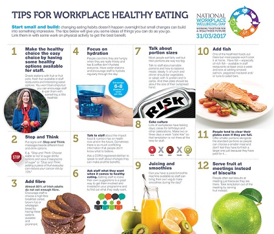

TAKE CONTROL OF YOUR BODY MASS INDEX (BMI)
Having excessive body fat can increase your risk for a number of health concerns including high blood pressure, heart disease, diabetes, stroke and even certain cancers. So how do you maintain healthy body mass? Introducing fiber and whole grain breads and cereals into your diet is a great starting point. For more ways to take control of your BMI, select a category from the bottom of the page.
A healthy eating plan gives your body the nutrients it needs every day while staying within your daily calorie goal for weight loss. A healthy eating plan also will lower your risk for heart disease and other health conditions.
